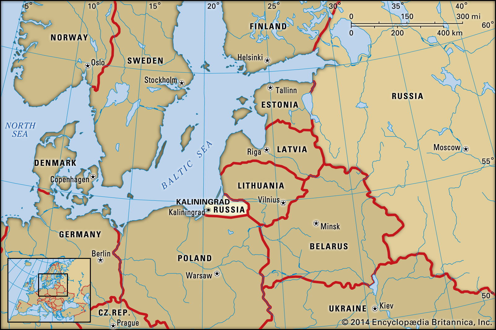

The Last Bastion of Russia in Europe
If you look at the map of Europe, you’ll find a pretty noticeable piece of land ,almost half the size of the country of Belgium,between Poland and Lithuania, bordering the Baltic Sea. At first glance, it seems unaccounted for.
This small piece of land overlooking the Baltic Sea, is the Kaliningrad Oblast, an exclave of Russia in the heart of Europe.
A scant piece of land bordering the Baltic Sea, Kaliningrad has no common border with Russia, which is almost 300 miles to the east . The city centre is 75 miles from the Lithuanian border, and a mere 30 miles from Poland. During the communist era, getting from Kaliningrad to Moscow by land involved nothing more complicated than an overnight train journey through neighbouring Soviet republics. But when the Soviet Union collapsed in 1991, Kaliningrad suddenly found itself cut off from Mother Russia by the newly independent countries of Belarus, Latvia and Lithuania.
Named after Mikhail Kalinin, a Bolshevik revolutionary, The Kaliningrad Oblast was earlier called Königsberg. The city, Kaliningrad was the capital of the Eastern Prussian empire. The city's history began in 1255, when the Teutonic Knights founded a fortress on a hill, named Königsberg meaning, King’s Hill. The city first became part of Russia as early as 1758 , as a result of its victory in the Seven Years' War. However, in 1762 the land was returned to the Kingdom of Prussia. In 1946, Königsberg again became a Russian city when WWII resulted in some German territory being transferred to the Soviet Union.
The demographics of Kaliningrad drastically changed after Soviet annexation post WW2. Between 1947 and 1948, 100,000 Germans were forced to shift to East Germany and 400,000 Russians, mostly military families were brought into Kaliningrad. Today the population stands at 941,873 according to the 2010 census.
The region is a boiling pot of several Baltic, German, communist culture. People frequently travel to nearby European cities and are certainly more connected to the rest of Europe than their mainland Russian counterparts. Before 1991, people frequented Polish cities to buy food items that were banned or unavailable in Russia. But travel has been greatly curbed post 1991. Nevertheless, a Russian citizen living in Kaliningrad enjoys some privileges when it comes to travelling in the European Union, when compared to a citizen of mainland Russia.
Citizens of Kaliningrad pride themselves with the fact that they share a common flavor of culture with both Europe and Russia, and can be considered a case study of what mainland Russian culture could look like, had the Iron Curtain of the USSR, not been so absolute and impenetrable.
In 2017, the nominal GDP of Kaliningrad Oblast was $7 billion USD , equivalent to USD $7,000 per capita. The oblast derives an economic advantage from its geographic position as an ice-free port and its proximity to the EU. It also has 90 percent of the world’s amber deposits. Post 1991, the military presence in the region waned. Linked to this, the unemployment rate of the region hiked. A recent investment initiative by the Russian government has led to a favorable economic boom in the region.
Post the breakdown of USSR, Kaliningrad Oblast was one of the most militarized areas of the Russian Federation and the density of military installations was the highest in Europe, as much of the Soviet equipment pulled out of Eastern Europe was left there. As of 2009, there were 11,600 Russian ground troops based in the oblast, plus additional naval and air force personnel; together comprising roughly 2 percent of the population. Russian diplomats have, since 2001, denied claims of tactical nuclear weapons being harbored in Kaliningrad, since that would be a direct violation, of the Russian pledge to remove nuclear weapons from the Baltics.
Being a Russian territory at the heart of NATO countries, this oblast has been the centre of several escalations and de-escalations of tensions between the US and Russia. Needless to say, Kaliningrad will continue to be one of the most politically significant regions in Europe, as relations between Russia and the West wax and wane.